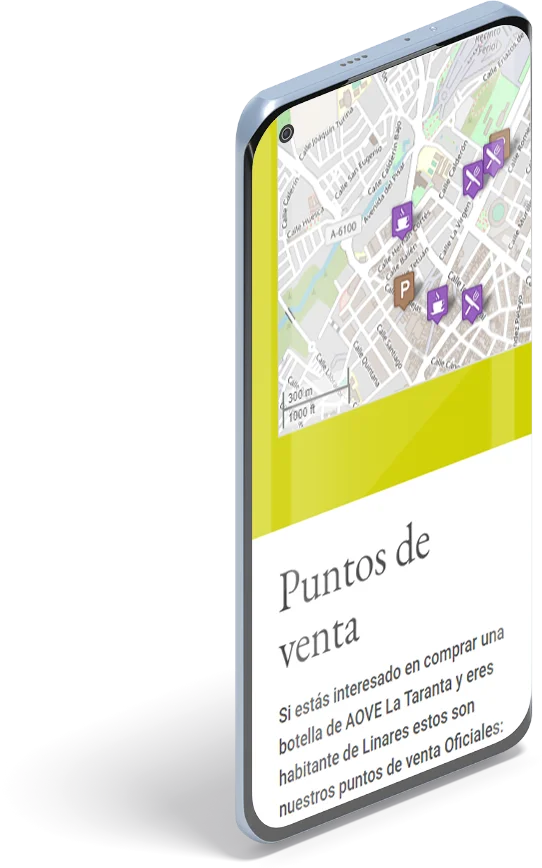
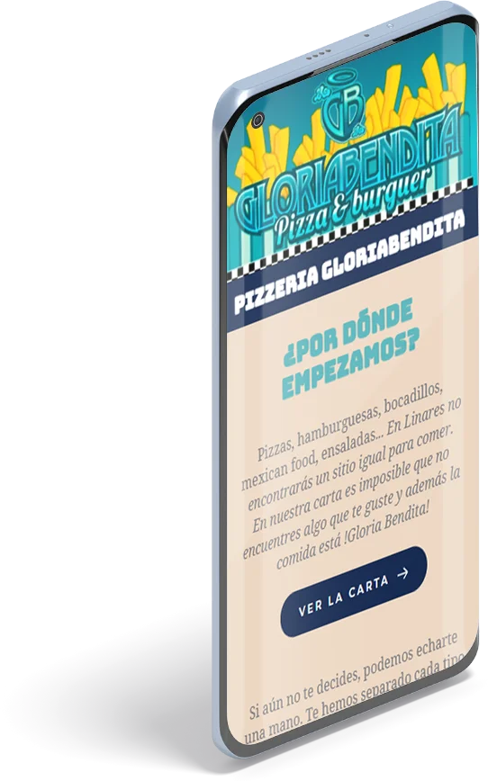
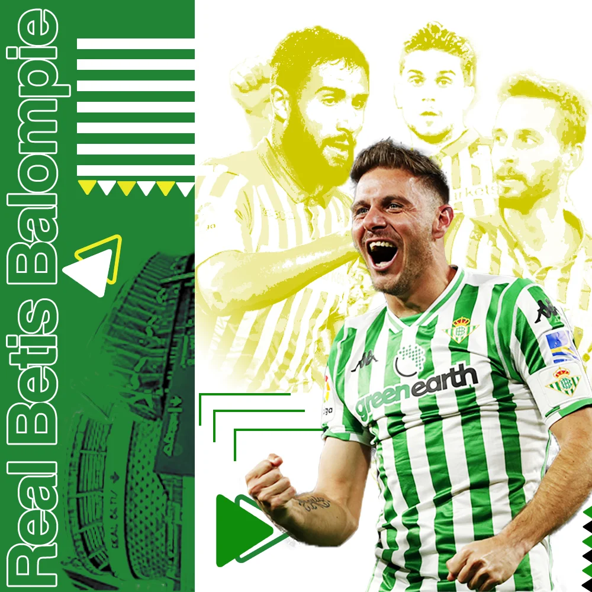

Páginas web
AOVE La Taranta
Una web para una marca de AOVE linarense. AOVE La Taranta necesitaba un portal en el que mostrar a los usuarios información de interés y que le permita a la marca vender su producto si lo consideran conveniente.
Sitio web

Pizzeria Gloria Bendita
Otra web para un negocio linarense. Este establecimiento de comida rápida, necesitaba un portal donde mostrar su carta además de fotos de sus platos, ubicación y teléfono.
Sitio web

Taller el puerto
Web para un taller porturario Almeriense. Un diseño claro y simple donde faiclmente los usuarios podrán encontrar la información que necesitan sobre la emperesa.
La web está en construcción
Redes Sociales
